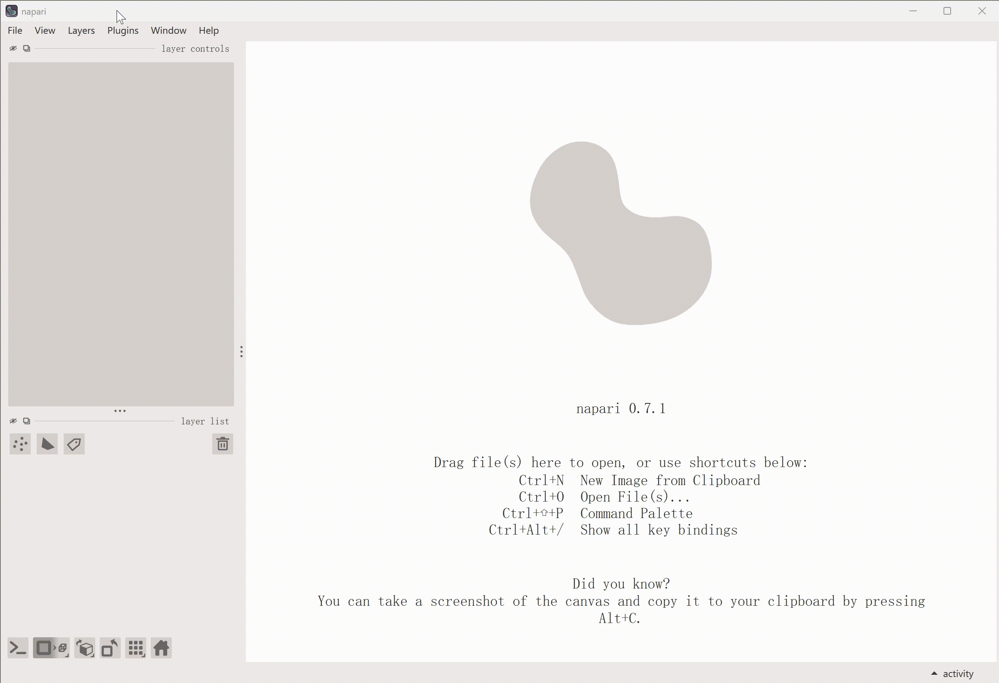

Napari-OmniEM
Interactive electron microscopy analysis powered by foundation models.
This manual is under active development
Some screenshots still show an earlier interface and do not yet match v0.3.0. We are also reorganizing the manual to make it easier to use, so its content may change.
Napari-OmniEM is a napari plugin that provides a unified, GPU-accelerated interface for electron microscopy (EM) image processing. Built on EM-DINO and OmniEM, it brings foundation-model inference to practical, interactive workflows for diverse 2D and 3D EM datasets.

Highlights
Napari-OmniEM covers the full workflow, from inference to model management:
- Flexible inference with three
modes:
- In-memory (tiled) for interactive work on data that fit in memory.
- Full Volume for single-pass inference without stitching seams.
- On-disk (local) for large volumes and multi-GPU inference.
- Task-aware model management: add, import, and share your own tasks and models.
- Shared backbone across tasks: one backbone is cached and reused by every loaded model, reducing GPU memory use.
- Tools workbench (🧰): manage model memory, post-process Image-to-Image results, and view logs.
It suits exploratory analysis, large-volume processing, and downstream quantitative studies.
Feedback and support
We welcome feature requests, workflow requirements, and bug reports. Visit the Napari-OmniEM repository to explore the source code, or open a GitHub issue to share feedback or report a problem.